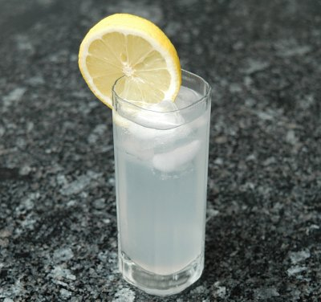

| Zutaten: | |
| 3 cl | Grand Marnier |
| 1 Schnitte | Zitrone |
| 1 Fläschchen | Tonic Water |
Eis in ein hohes Glas geben. Grand Marnier dazugeben dann die Zitrone und mit Tonic Water auffüllen, servieren.
Booklet on a Grand Marnier bottle
Erinnert natürlich an Gin Tonic hat aber eine süsse Note. Bin mir nicht sicher wie toll ich das finde. RE
@LINKBACK_TAG@ @WAKELOCK@